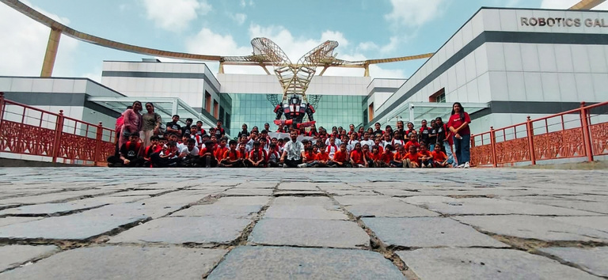

Narol graduation · Q2 archive ↗
Narol graduation · Q2 archive ↗Home / Impact
Project SashaktActivity highlights
A closer look at recent activities across the Sashakt communities.

Science City visit · Narol ↗July–September 2026
Narol graduation · Q2 archive ↗27 Sep 2026
Narol Science City visit
90 children took part in the educational visit.
Explore activity → Bal Sashakt art activity · Naroda ↗
Bal Sashakt art activity · Naroda ↗Q2 FY 2026–27
Bal Sashakt creative activities
Children took part in creative learning and group activities.
Explore activity → Salon work · Naroda report archive ↗
Salon work · Naroda report archive ↗